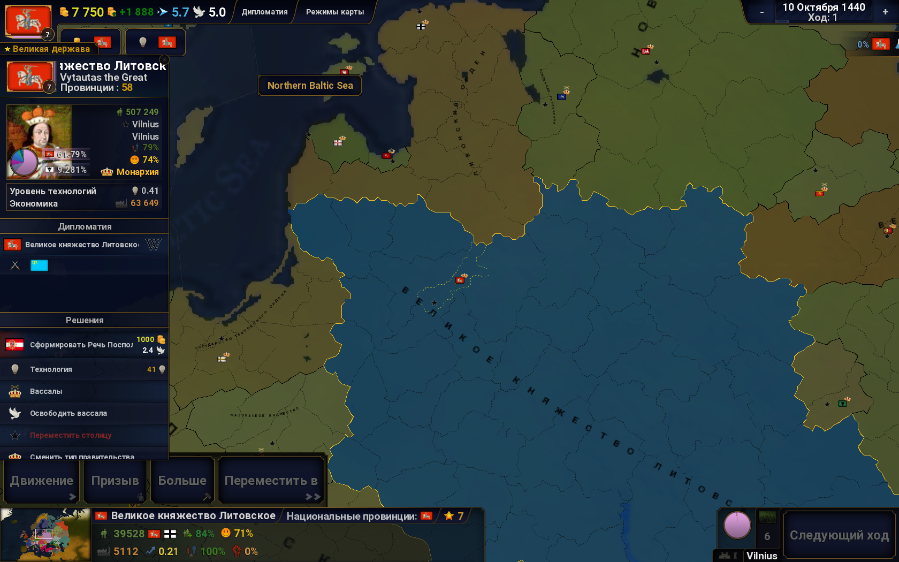

s
Как играть в Age of Civilizations 2
Разбор интерфейса

Привет, если вы это читаете, значит вы хотите научиться ирать в Age of Civilizations 2 (или коротко AoC2).
Ну что, думаю начнём.
В этой статье я расскажу вам всё очень подробно об AoC2.
Начнём с того что AoC2 можно скачать на ПК и мобильное устройство.
Меню этой игры выглядит так. Если что все снимки были сделаны на ПК.
Обучение вы можете не проходить, так как вы щас узнаете всю нужную и полезную информацию как играть в AoC2.
Вы так же можете увидеть на картинке, что есть кнопка Настройки. В них вы можете полазить и настроить игру, что бы было приятно смотреть на картинку!
Через кнопку Редактор можно делать свои сценарии, например про Вторую Мировую войну.
Но самая интересная кнопка Играть. Нажимаем на её и видим следующие:

Вы наверное немного расстеряетесь, но неволнуйтесь. Тут только 3 кнопки на которые надо нажимать. Это Загрузить игру, Продолжить играть, Новая игра.
Думаю не надо объяснять куда нажимать что бы создать новую игру.
Нажимаем кнопку Новая игра 🙃. После того как мы нажмём на кнопку мы увидим это:
Вверху мы видим какой в мире год и там же можно выбрать в каком периоде вы будете играть (Да я знаю что в скрину немного закрыто из-за того что я сразу сделал скрина, а не подождал.)
И так, что мы видим на картинке, в верхнем левом углу есть кнопка Случайная цивилизация. Если её нажать то то рандом определит за какую страну можно поиграть. И вы спросите а если я не хочу играть за ту страну которую мне выбрал рандом. А это очень легко исправить. Нажимаете на ту страну за которую хотите играть и справа вы видете табличку, в табличке вы увидите иконку с надписью "Добавить игрока?" и флаг страны которую вы выбрали, нажимем и вы добавили эту страну за которую вы будите играть. Но есть одно но вы если щас нажмёте играть, вы будите играть за 2 страны, что бы такого не было надо нажать с права от страны крестик и вы уберёте эту страну и будете играть за одну страну.
В нижнем левом углу мы видим кнопки Назад и Настройки.
Если нажать кнопку Назад, мы выйдем обратно в меню.
А вот с кнопкой Настройки немного интереснее


На картинках сверху можно увидеть
- Тип карты
- Маштаб карты
- Сколько цивилизаций
- Уcловия победы
- Сложность
- Туман войны
- Скорость игры
- Агрессивеость
- Управление дипломатией
- Заполнение карты
- Случайное заполнение
- Перемешка цивилизаций
- Режим песочницы (бога)
- Режим наблюдателя
- Колонизация провинций
- Вечная война
То что я не упомянул, трогать не надо. И из всех перечисленных мною разделов нам пригодятся только 3, ну или от силы 5. Я вам расскажу только о 3 самых нужных для новичков разделов.
И первый раздел который нам понадобится это "сложность". Так как мы новички, мы выбираем самую "лёгкую сложность". Но если вы думаете что она слишком простая, то так не думайте. Там вас может нагнуть даже Нидерланды, если ИИ так захочет.
Второй раздел который нам понадобится, это "Туман войны". Его всегда ставим на нет из-за того что если мы поставим "Иследование", то мы не будем видеть что произошло в остальных странах или кто скем воюет. Мы будем видеть только ближайшие страны.
И третий пункт который нам нужен, это пункт "Режим песочницы". Если его включить, то у вас будет бесконечное кол-во денег.
Ок, мы разобрались со всем что находится в этом меню и нажимаем кнопку играть!
Как вы видите я выбрал страну ВКЛ. Первое что мы видим что есть в этом меню, это флаг нашей страны в верхнем левом углу. Давйте туда нажмём.
"Ого, что это тут" - спросите вы. Как тут всё сложно. Пожалуй пойду играть в свой Vыsral Stars, там намного легче играть и не надо думать.
Если вы так подумали, то можете идти и играть в свой Vыsral Stars. Но те кто остался расскажу что в этом меню всё очень просто. Правая часть, где нарисована статистика нам не нужна, так как это статистика и она нам нужна только для того, что бы смотреть на каком мы месте в рейтинге стран по: населению, провинций и т.д. Справа находится самое нужное. Там мы можем увидеть наши доходы и расходы. Но это не самое интересное. Тут мы можем стать Путиным и повышать налоги. Говорю сразу, не увеличивайте налоги больше той чёрточки которую вы видите. Так против вас может начаться востание. Это вам не Россия. Чуть ниже мы видим Товары, Исследования и Инвестиции.
Товары нужны, что бы ваше население увеличивалось.
Благодоря Исследованиям можно получать плюшки о которых мы потом ещё обязательно вспомним.
Если увеличивать Инвестиции то ваша экономика будет улучшаться. Но помните для всего этого нужна игровая валюта.
Дальше мы видим наше количество денег, а правее от количества денег мы видим сколько денег мы получим в следующим ходу.
Дальше мы видим синию стрелочку. Это"Очки движения", благодоря им мы можем перемещать свою армию. Рядом мы видим белую птицу. Это "Очки дипломатии". Если их использовать, то мы сможем улучшать отношения с другими странами и стабилизировать провинции. Ещё правее мы видим слово,"Дипломатия". Если на её нажать то мы увидим следующее:

Тут мы видим что карта изменилась. Можно посмотреть название своей страны, население, столицу, стабильность, уровень счастья и тип правительства, экономику и уровень технологий. Можно смотреть с кем мы в альянсе (станы будут подсвечиться синим или другими цветами, но по стандарту синим). Можно посмотреть своих вассалов и менять тип правительства (на Монарихию, Фашизм, Комунизм и т.д). Брать и погосать займы.
Если нажать на другую страну то вы увидете следующее:
Думаю, здесь ничего не надо объяснять, так как выглядит всё очень понятно. Сможете разобраться сами (а ещё мне лень писать).
Дальше мы види в каком дне, месяце и году вы играете. Там же вы можете поменять скорость игры (но советую вам играть на стандартном режиме)
Помните мы упоминали про "Исследования", и что там есть небольшие плюшки? Так вот, мы плавно подобрались к ней. В верхнем правом углу по деньгами, мы видим кнопочку с лампочкой и флагом нашей страны. Нажимаем туда и видим это:
Стойте, стойте, стойте. Неволнуйтесь тут всё очень легко. В верхнем правом углу мы види лампочки и сколько их у нас. Это очки исследования. Благодоря им мы можем улучшать экономику нашей страны. Только выбирайте самое нужное что вам надо улучшить. Вы наверное спросите:
- А что я буду получать за "Исследования"? А я вам отвечу что в правом верхнем углу под значком даты, можно увидеть ваш флаг рядом с колбой в которой синяя жидкость. Если ваши "Исследования" будет хорошо спонсироваться, то этот прогресс будет заполняться до 100%.
Но вы спросите:
-И что я тогда получу. А я вам отвечу. Ничего. Ладно, ладно, вы получите 1 очко исследований. Это та лампочка благодоря которой можно улучшать экономику! А чуть правее мы видим кнопу режим карты. Скажу сразу, 99% этой кнопки бесполезна, но вы можете посмотреть что там находится если захотите. Вы спросите
-А почему только на 99% она бесполезна а не на 100%? А я отвечу что там есть 1 действительно полезный режим карты. Он называется стабильность провинции. Он показывает какие провинции плохо вам подчиняются и ломают вам экономику, а какие наоборот улучшают. О том как стабилизировать провинцию расскажу поже в статье.
Дальше на картинке  в нижнем левом углу нахится: мини-карта, название страны, является ли провинция вашей, и значение провинции (это та звёздочка). Чуть ниже мы видим: население провинции, темп роста провинции, экономика провинции, уровень разработки провинции, счастье провинции, стабильность провинции и риск востания провинции.Это всё на 1 провинцию. 3 последних пункта связанны между собой. Чем выше стабильность и счастье провинции тем меньше риск восстания. Скажу сразу это бессполезная табличка на которую даже смотреть не надо.
в нижнем левом углу нахится: мини-карта, название страны, является ли провинция вашей, и значение провинции (это та звёздочка). Чуть ниже мы видим: население провинции, темп роста провинции, экономика провинции, уровень разработки провинции, счастье провинции, стабильность провинции и риск востания провинции.Это всё на 1 провинцию. 3 последних пункта связанны между собой. Чем выше стабильность и счастье провинции тем меньше риск восстания. Скажу сразу это бессполезная табличка на которую даже смотреть не надо.
А вот выше находятся 4 интересных и основных кнопки игры. Движение, Призыв, Больше и Переместить в. Начну я пожалуй с кнопки "Призыв" так как это самая лёгкая кнопка из всех. Нажимаем на неё и внизу нам высвечивается ползунок где мы можем призывать определённое кол-во солдат. Дальше нажимаем галочку и всё, у вас есть солдаты. Но помните, на армию у вас тратится госбюджет и если вы призовёте очень много солдат, то вы за один ход можете полачать денег: -200 монет, -20000 монет за 1 ход. Так что если рядом с вами есть маленькая стран то вначале матча 10 ходов пропустите а потом призовите на максимум денег армии и захватите ту страну, а дельше улучшайте экономику страны и улучшайте отношения с другими странами что-бы на вас не напали.
Дальше мы разберём кнопку "Больше". Если мы на её нажмём то мы ивидим следующие:

На фото мы видим что слева появилась табличка на которой мы видим список построек:
- Замок
- Сторожевая башня
- Ферма
- Мастерская
- Библиотека
- Арсенал
- Лагерь снабжения
- Фестиваль
- Ассимиляция
- Инвестировать 1
- Инвестировать 2
- Мгновенный призыв
- Роспуск армии
- Грабёж
- Забросить
Сейчас я вам всё объясню для чего вам это всё нужно, и что по своему опыту я почти никогда не использую. Начнём по порядку.
1. Для чего нам нужен Замок? Он нужен если вы ведёте с кем-то войну и случилось такое: У вас в провинции 1000 солдат, а у врага 1200 солдат в провинции. Понятно что 1000 солдат меньше 1200, и что бы не потерять провинцию вы строите замок и обороняитесь. Своей армией в 1200 солдат на вас нападут и проиграют, а у вас ещё останется 200 солдат. Если бы вы не построили замок то вы бы потеряли свою провинцию.
2. Для чего нужна Сторожевая башня. Если её построить, то мы будем видеть сколько у страны-врага находится солдат в провинции.
3. Для чего нужна Ферма? Она нужна что бы повышать население в провинции.
4. Для чего нужна Мастерская? Она нужна что бы доход за 1 ход увеличивался.
5. Для чего нужна Библиотека? Если её покупать, то у вас будет за 1 ход увеличиваться Прогресс иследований.
6. Для чего нужен Арсенал? Если его купить то у вас будет снижаться стоимость призыва войск.
7. Для чего нужен Лагерь снабжения? Если его купить, то у вас будет уходить меньше денег на содержание армии.
8. Для чего нужен Фестиваль? Он нужен для того что бы повышать счастье провинции.
9. Для чего нужеж пункт Ассимиляция? Он нужен что бы стабилизировать провинцию и она приносила больше дохода. (Это оооочень нужная кнопка. Без неё вы никуда далеко не уедите!!!). Например: Вы воевали со страной и захвотили её. Помните о режимах карты? Нажимаем на стабильность провинций и видим что есть зелёные провинции и красные провинции. Зелёные провинции - это хорошие провинции. А красные провинции - это плохие провинции, их надо стабилизировать. Но как? А для этого и нужна кнопка Ассимиляция.
10. Для чего нужно Инвестиции 1? Если её покупать то экономика в провинции будет улучшаться.
11. А для чего нужно Инвестиции 2? Они нужны что бы прогресс ислдований увеличивался.
12 Для чего нужен Мгновенный призыв и чем он оличается от обычного призыва? Как понятно по названию, он мгновенно призывает. Давайте приведе пример. Если использовать обычный призыв, то войска будут готовы только в следующем ходу, а если призвать в мгновенном призыве, то вы призовёте солдат сразу и сможете напсть на врага, но стот это в 2 раза дороже обычного призыва.
13. Для чего нужен Роспуск армии? Он нужен что бы вы убрали армию из провинции и вы не тратили много денег на армию.
14. Для чего нужен Грабёж? Он нужен тогда когда вы ведёте с кем-то войну и вы захватили вражескую территорию. и тогда вы сможете её разграбить. Можно сказать это дополнительные деньги при войне.
15. Для чего нужна кнопка Забросить? Это очень ненужная кнопка. Если вы её нажмёте, то вы потеряете контроль на провинцией.
Далее идёт кнопка Движение. Её можно передвигать ваши войска на ближайшие территории.
Далее идёт кнопка Переместить в. Эта кнопка нужна что бы переместить свои войска куда-то далеко. Например вы хотите устроить войну с США, но ваши войска очень далеко. Нажимаем на эту кнопку и нажимем на провинции рядом с США. А дальше благополучно забываем про нашу армию.
Ну вот и всё. теперь вы гуру в AoC2, и можете играть как профисионал.